The main impact of a 200 basis-point (2.00 percentage-point) rise in United States interest rates on Norway is a 0.04% drop in GDP by the 12th quarter — a limited spillover. This is a small, slow-building hit rather than a violent one, and it ranks Norway 21st of the countries in this run by absolute GDP effect, placing it in the "minimal" band. The path is telling: GDP is essentially flat in the first quarter (−0.0007%), then grinds steadily lower through the first three years, peaking at −0.0388% of GDP in Q12 before beginning a slow retreat. By Q20 the level is still −0.0125% below baseline, so the shock has not fully washed out even five years on.
Demand and trade. Household consumption follows the same hump shape, peaking at −0.0194% in Q12 and easing to −0.0073% by Q20, as higher global rates feed through to domestic borrowing costs and wealth. Private investment is the sharpest domestic demand casualty: it falls to −0.1171% below baseline in Q10, then recovers to roughly flat (+0.0002%) by Q20 as the cost-of-capital impulse fades. Net exports — this model's trade balance, with imports and exports not split — actually improve early, rising to +0.0183% by Q4, before turning negative at Q8 and bottoming at −0.0398% in Q14; the early gain reflects weaker domestic demand pulling in fewer imports, while the later deterioration tracks the currency. Government spending drifts down to −0.0248% in Q13 and stays near −0.0125% at Q20, and government debt edges up modestly, peaking at +0.0076% of baseline in Q18 as the deficit widens.
External / FX. The real exchange rate — currency strength — appreciates steadily, reaching +0.3877% above baseline in Q11 and still +0.1755% at Q20. That is the key external channel: a stronger krone in real terms erodes competitiveness, which is exactly why net exports swing from an early positive to a persistent negative from Q8 onward. The currency move and the trade balance line up cleanly, with the NX trough lagging the RER peak by three quarters.
Labour. Employment falls gradually, peaking at −0.0259% below baseline in Q16 and still −0.0208% at Q20 — a slow labour-market drag rather than a sudden one. Unemployment rises in mirror image, peaking at +0.0234 percentage points in Q15 and remaining +0.0172pp at Q20. Real wages, by contrast, rise to +0.0293% above baseline in Q12 before fading to +0.0018% by Q20, as softer inflation and weaker labour demand interact.
Prices. CPI inflation picks up early, peaking at +0.0126 percentage points in Q2, then crosses below baseline at Q10 and ends at −0.0036pp by Q20. Domestic inflation shows the same pattern, peaking at +0.0088pp in Q2 and turning negative at Q10, finishing at −0.0025pp. Firms' marginal cost falls steadily to −0.0231% below baseline in Q12 and remains −0.0075% at Q20, consistent with the disinflationary demand pull.
Financial conditions. The local policy rate initially rises +0.0183pp (annualized) around Q5–Q6, then turns negative at Q12 and falls to −0.0222pp by Q18 — the domestic authority easing into the slowdown. Government yields behave differently across the curve: the 2-year yield rises early to +0.0153pp in Q2 before turning negative at Q8 and bottoming at −0.0204pp in Q15; the 5-year yield falls throughout, reaching −0.0144pp in Q13; and the 10-year yield declines more gently to −0.0081pp in Q12. Bond prices fall as discount rates rise, peaking at −0.5035% below baseline in Q8, then recover and turn positive at Q15, ending +0.1314% above baseline. Equity prices fall to −0.2913% in Q8 and remain −0.0358% below baseline at Q20. Tobin's Q — the value of installed capital — falls to −0.0820% in Q10 and returns to roughly baseline by Q20. House prices decline steadily to −0.0332% in Q18 and stay near −0.0325% at Q20. Bank credit contracts gradually to −0.0104% in Q18, and lending spreads widen only marginally, peaking at +0.0001pp in Q17 — a negligible credit-cost effect.
Sectoral and capital. Manufacturing GDP is hit hardest of any output measure, falling to −0.1167% below baseline in Q11 and still −0.0517% at Q20, reflecting the trade-exposed, rate-sensitive nature of the sector. Services GDP falls much less, peaking at −0.0222% in Q12 and easing to −0.0072% by Q20. The capital stock erodes slowly, reaching −0.0058% below baseline by Q19–Q20 as weaker investment accumulates into a smaller productive base.
Timing. The GDP hit is largest in Q12 at −0.0388%, and it has not faded by Q20 — the level remains −0.0125% below baseline, with no sign change. The peak is late and the decay is slow, which is characteristic of a demand-and-competitiveness channel working through trade and investment rather than a sharp financial shock.
Close. These are model impulse responses relative to baseline, not forecasts. They describe how Norway's block in this multi-country model responds to a 2.00 percentage-point US rate rise, holding everything else at its baseline path.
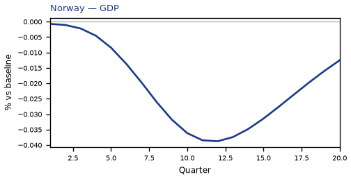
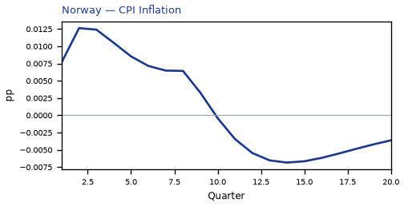
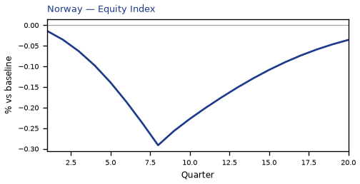
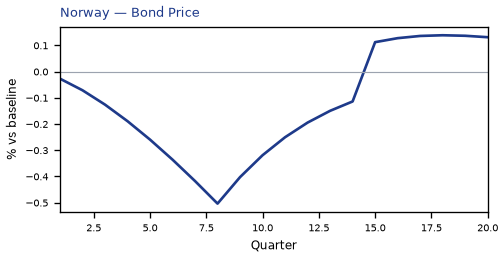
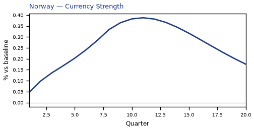
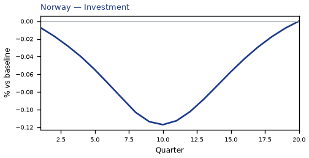
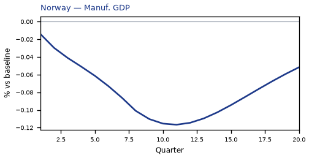
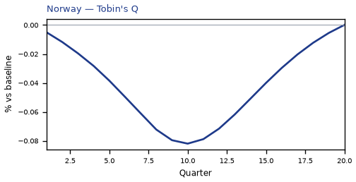
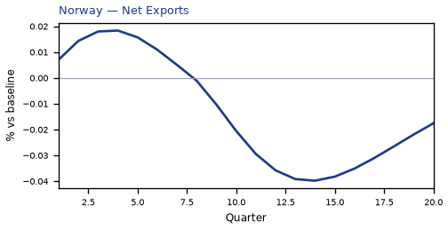
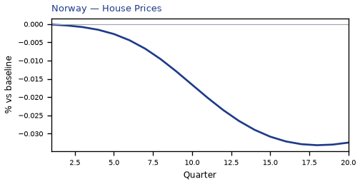
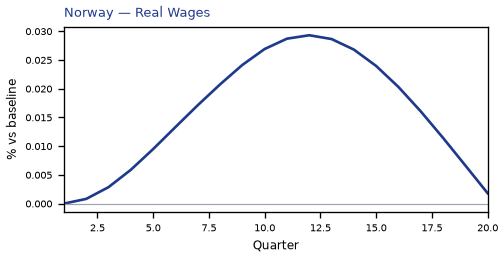
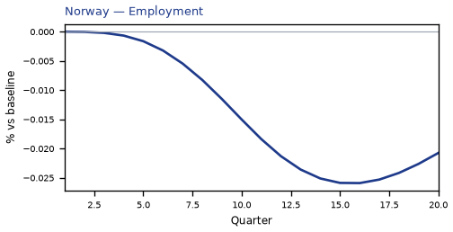
source=live · global_macro_v5 · contract v6 · Q1–Q20 JSON · not financial advice